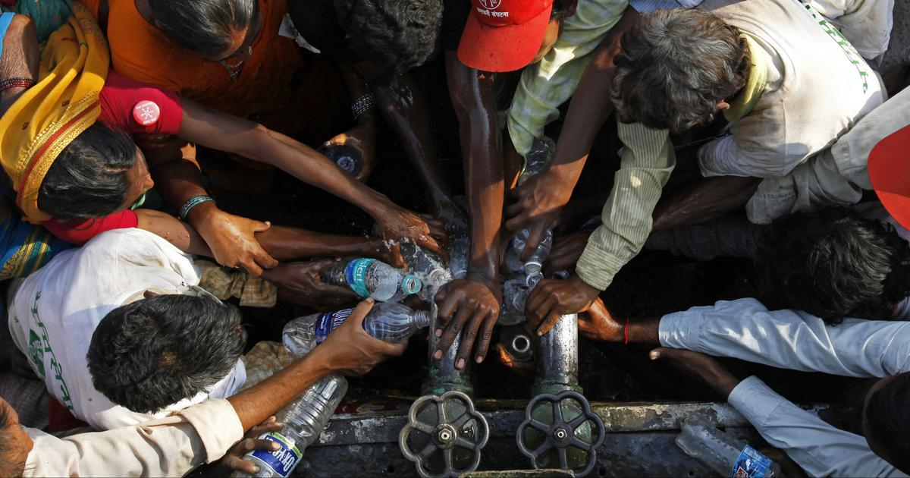

While rainwater harvesting offers numerous benefits, it also comes with a set of challenges that must be carefully considered. From significant initial setup costs and ongoing maintenance requirements to potential issues with water quality and storage capacity, these obstacles can impact the effectiveness and sustainability of rainwater harvesting systems. Additionally, the reliance on local climate conditions and potential regulatory hurdles further complicate the implementation of these systems. Understanding these challenges is crucial for anyone looking to adopt rainwater harvesting as a sustainable water management solution.
•Initial Water Quality Issues: When rainwater harvesting systems are first installed, the initial water quality may be poor due to contaminants on the catchment surface. Ensuring clean initial water requires effort and resources to clean the catchment area.
•High Initial Costs: Setting up a rainwater harvesting system involves significant upfront investment. The costs of installing gutters, downspouts, filters, storage tanks, and pumps can add up quickly. Advanced systems with automated features and extensive filtration can be even more expensive. This high initial cost can be a barrier for many homeowners and small businesses, particularly in low-income areas.
•Maintenance Requirements: Rainwater harvesting systems require regular maintenance to ensure they operate efficiently and produce clean water. Gutters and downspouts need to be cleaned frequently to remove debris and prevent blockages. Filters must be inspected and replaced periodically, and storage tanks should be checked for leaks and contamination. This ongoing maintenance can be time-consuming and may require specialized knowledge or professional services, adding to the overall cost and complexity.
•Limited Storage Capacity: The amount of rainwater that can be collected and stored is limited by the size of the storage tanks and the catchment area. In regions with low or infrequent rainfall, the stored water may not be sufficient to meet demand during dry periods. This limitation can make rainwater harvesting less reliable as a sole water source, particularly in arid or semi-arid regions.
•Potential Contamination: If not properly maintained, rainwater harvesting systems can become a source of water contamination. Debris, leaves, bird droppings, and other pollutants can accumulate in gutters and storage tanks, leading to water quality issues. Even with filtration systems in place, there is a risk of microbial contamination if the water is not treated appropriately. Ensuring the water is safe for potable use requires careful monitoring and treatment, which can be challenging and costly.
•Limited Use Cases: While rainwater harvesting is excellent for non-potable uses, its application for potable water requires extensive treatment. Not all systems are designed for drinking water, and the costs and complexity of ensuring safe potable water can be prohibitive.
•Risk of Mosquito Breeding: Improperly covered or maintained storage tanks can become breeding grounds for mosquitoes, posing health risks, particularly in areas prone to mosquito-borne diseases.
•Social and Cultural Acceptance:
In some communities, there may be resistance to adopting rainwater harvesting due to social or cultural factors. Education and awareness are necessary to promote understanding and acceptance of this sustainable practice.
Navigating these challenges requires careful planning, investment, and community engagement, but the benefits of rainwater harvesting can make these efforts worthwhile.
In summary, while rainwater harvesting offers substantial environmental and economic benefits, it also comes with challenges and disadvantages that need careful consideration. Understanding these potential drawbacks can help individuals and communities make informed decisions about the feasibility and implementation of rainwater harvesting systems.